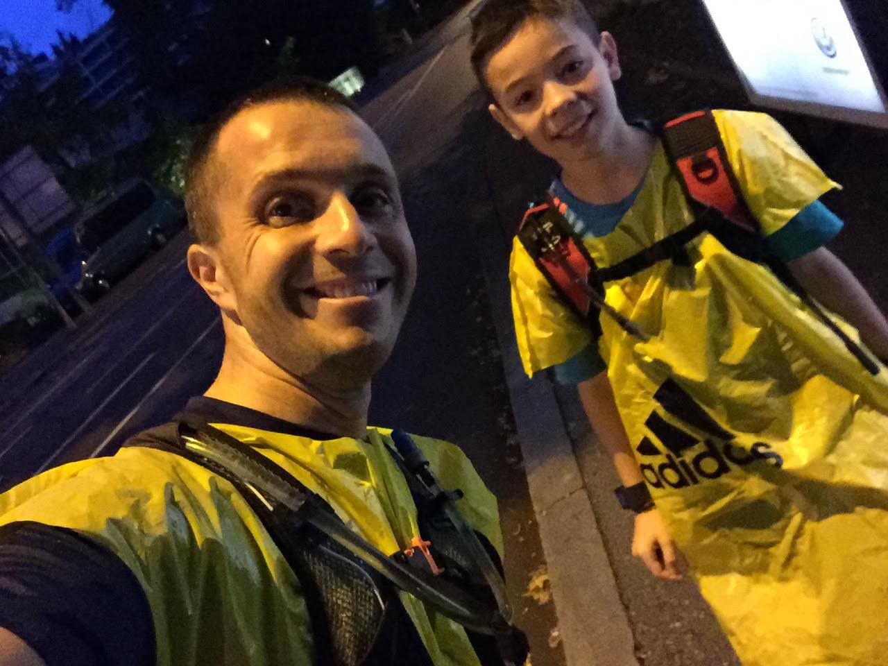
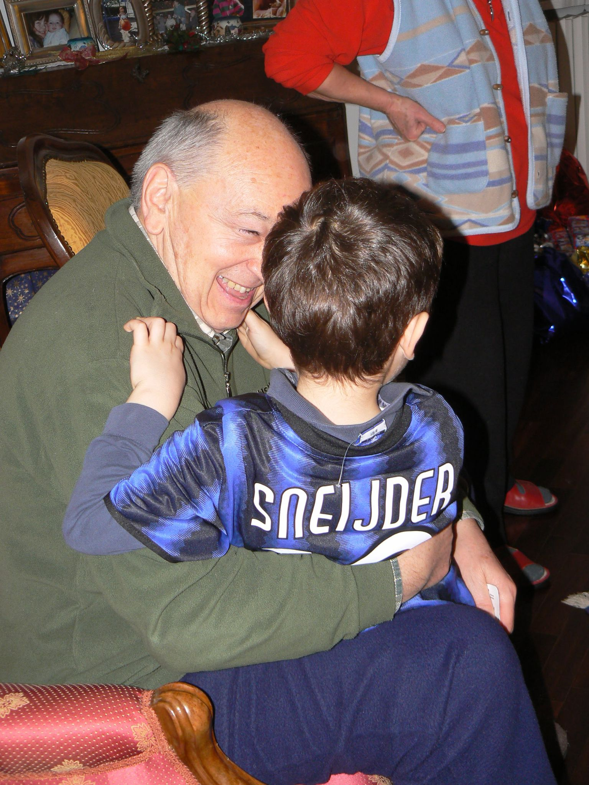
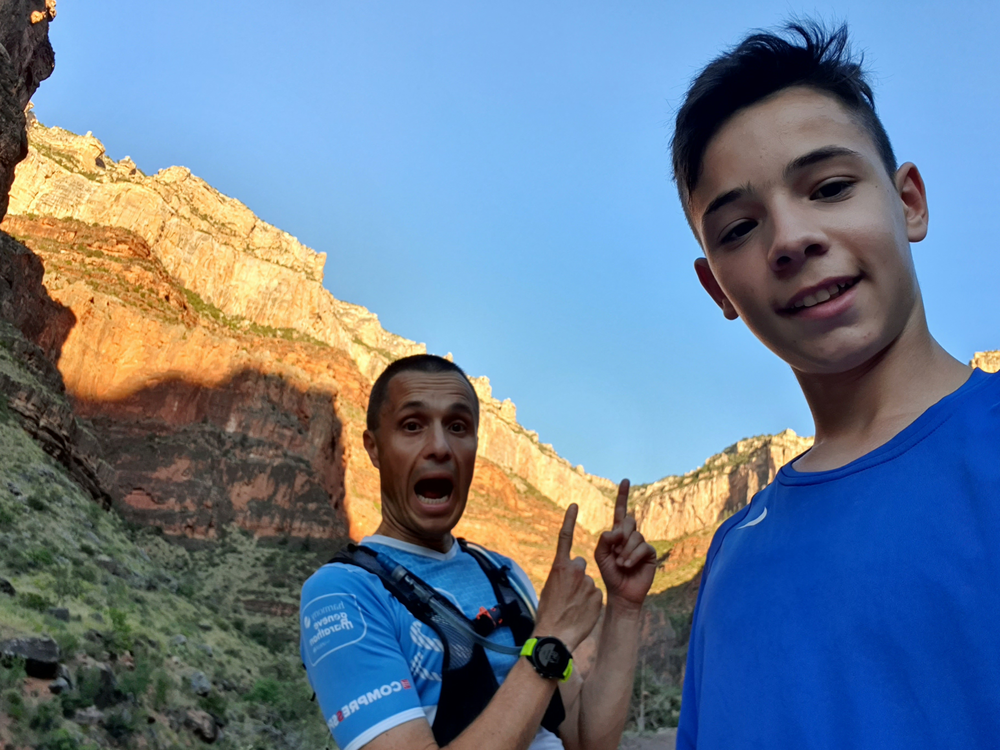

Experience
Cavalier Autonomous Racing
March 2024 - PresentResearcher | Motion Planning & Perception Teams
C++
Python
ROS 2
Docker
CI/CD
University of Virginia
August 2023 - PresentTeaching Assistant | CSO
C
Bash
git
VA Motorsports
August 2022 - PresentBattery Management System Co-Lead | Software Team
C
C++
ROS 2
Docker
Embedded Systems
Icarus Medical Innovations
January 2024 - July 2024Software Development Intern
React.js
Node.js
MySQL
TypeScript
git
ML
About Me

I'm a computer science student at the University of Virginia with a 4.0 GPA and an interest in autonomous embedded systems. I'm originally from Italy (with both English and Italian as first languages), and I've lived in the Czech Republic, Beligum, Romania, Switzerland, and the US (both in IA and VA). Beyond my passion for robotics and traveling, I love practicing sports like running, skiing, and soccer, and spending time with my family.


